| > | restart; |
| > | libname := cat(kernelopts(homedir),"/prob-school/maple"),libname; |
| > | with(NewSLO); |
| > | with(Hakaru); |
| > | # Eddy's motivating problem
m := Bind(Uniform(0,1), p, Weight(p^5*(1-p)^3*56, Ret(p))); |
| 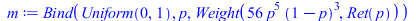 |
| > | fromLO(improve(toLO(m))); |
| 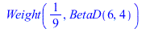 |
| > | plot(density[BetaD](6,4)(p), p=0..1); |
| 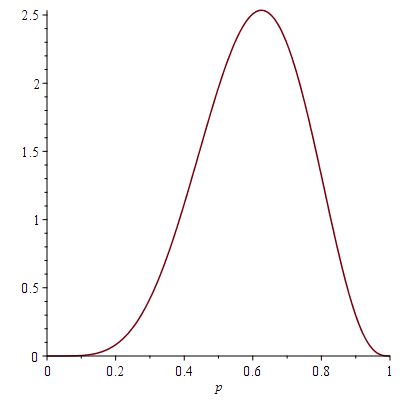 |
| > | # Zero-dimensional Bayesian linear regression -- in other words, averaging
m := Bind(Gaussian(0,10), c0, Weight(density[Gaussian](c0,3)(y0), Weight(density[Gaussian](c0,3)(y1), Weight(density[Gaussian](c0,3)(y2), Weight(density[Gaussian](c0,3)(y3), Ret(c0)))))); |
| 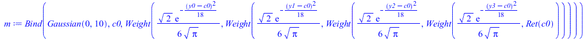 |
| > | # Notice the Gaussian mean computed symbolically in the output below
fromLO(improve(toLO(m))); |
| 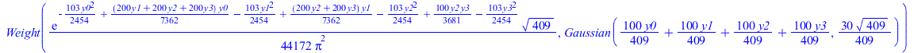 |
| > | # Generalize zero-dimensional Bayesian linear regression from 4 data points to an array of n data points
m := Bind(Gaussian(0,10), c0, Bind(Plate(n,i,Weight(density[Gaussian](c0,3)(idx(y,i)),Ret(Unit))), dummy, Ret(c0))); |
| 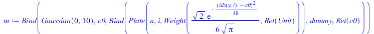 |
| > | # Notice the symbolic sums and n in the output below
fromLO(improve(toLO(m))); |
| 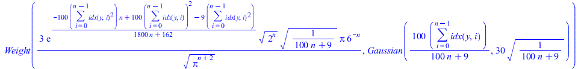 |
| > | # Generalize the standard deviations from 10 to s and from 3 to t
m := Bind(Gaussian(0,s), c0, Bind(Plate(n,i,Weight(density[Gaussian](c0,t)(idx(y,i)),Ret(Unit))), dummy, Ret(c0))); |
| 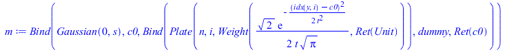 |
| > | # Notice the symbolic s and t in the output below
fromLO(improve(toLO(m))); |
| 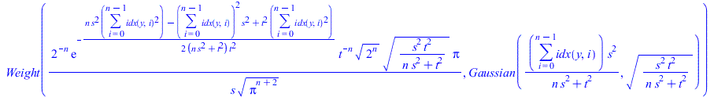 |
| > | # One-dimensional Bayesian linear regression
m := Bind(Gaussian(0,10), c0, Bind(Gaussian(0,10), c1, Weight(density[Gaussian](c0+c1*x0,3)(y0), Weight(density[Gaussian](c0+c1*x1,3)(y1), Weight(density[Gaussian](c0+c1*x2,3)(y2), Weight(density[Gaussian](c0+c1*x3,3)(y3), Ret([c0,c1]))))))); |
| 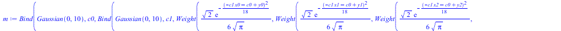 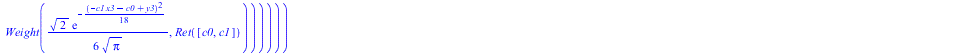 |
| > | # Notice that the mean computed for c1 below takes the inner product of x and y, as if computing their correlation
fromLO(improve(toLO(m))); |
| 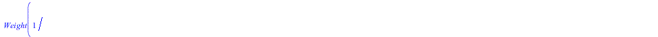 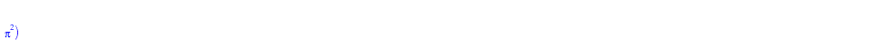 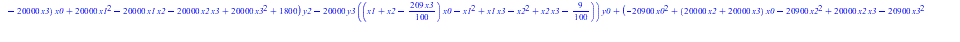 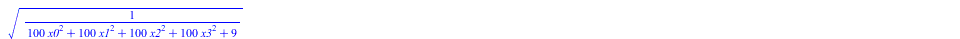 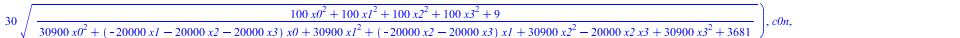 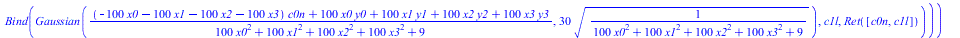 |
| > | # Use Plate to remove duplication of Gaussian(0,10) in the prior distribution
m := Bind(Plate(2,j,Gaussian(0,10)), c, Weight(density[Gaussian](idx(c,0)+idx(c,1)*x0,3)(y0), Weight(density[Gaussian](idx(c,0)+idx(c,1)*x1,3)(y1), Weight(density[Gaussian](idx(c,0)+idx(c,1)*x2,3)(y2), Weight(density[Gaussian](idx(c,0)+idx(c,1)*x3,3)(y3), Ret(c)))))); |
| 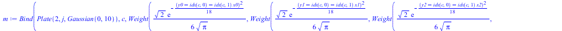 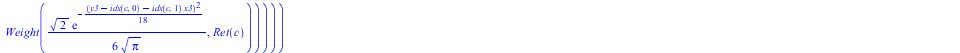 |
| > | # Notice that the loop for c is unrolled below into its two iterations
fromLO(improve(toLO(m))); |
   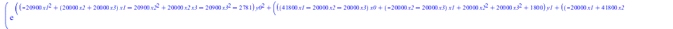 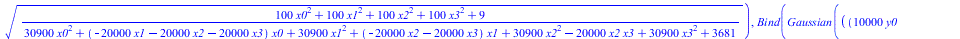 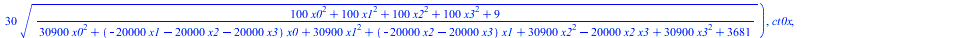 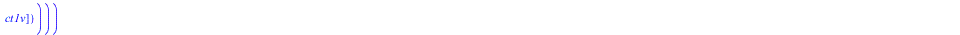 |
| > | # EXERCISE: Generalize one-dimensional Bayesian linear regression from 4 data points to an array of n data points
m := EXERCISE; |
| > | fromLO(improve(toLO(m))); |
| > | # EXERCISE: Generalize the standard deviations from 10 to s and from 3 to t
m := EXERCISE; |
| > | fromLO(improve(toLO(m))); |